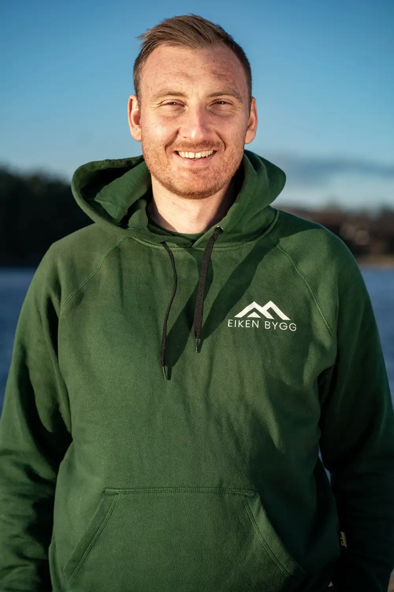

Oversikt
Én aktør koordinerte hele jobben.
Vi hadde ansvar for prosjektering, gjennomføring og samordning av fagene – fra riving til ferdig resultat.

Gulv, vegger og tekniske anlegg ble fornyet. Listprofiler og utsmykninger fikk tilbake sitt opprinnelige uttrykk. På Husøy bygget vi opp en bolig fra innsiden, med respekt for huset familien kjente så godt.
Illustrasjonsbildene viser stemning og materialer, ikke det gjennomførte prosjektet.Det viktigste for kunden
Oversikt
Vi hadde ansvar for prosjektering, gjennomføring og samordning av fagene – fra riving til ferdig resultat.
Bokomfort
Rør og elektro ble fornyet. Vannbåren gulvvarme og balansert ventilasjon ble en del av oppgraderingen.
Særpreg
Originale listprofiler ble målt opp og gjenskapt. Trappen ble satt i stand, slik at husets uttrykk kunne leve videre.
Har du et hus du vil fornye – og noe du vil bevare?
Ta en prat med HenrikUtgangspunktet
Eierne hadde bodd her gjennom mange år. Da de ønsket en større oppgradering, visste de godt hvordan hjemmet skulle bli. Men den gamle stilen, detaljene og særpreget var like viktige som de nye løsningene.
Mye av boligen var fortsatt i original stand. Ett bad var oppgradert tidligere, mens resten bar preg av alderen. Vi fikk ansvar for å bygge opp huset på nytt og koordinere fagene som skulle til. Det krevde både en plan for det som skulle fornyes, og omtanke for det som skulle videreføres.
Et glimt av uttrykket
Håndverket bak resultatet
Vi ribbet boligen ned til den eksisterende konstruksjonen. Gulv, vegger og tak ble avrettet og bygget opp igjen før nye overflater og løsninger kunne komme på plass.
I etasjeskillene lå det store mengder leire, slik det ofte gjorde i hus fra denne perioden. Rundt 21 tonn ble sugd ut. Under rivingen avdekket vi også råteskader i enkelte bunnsviller, treverket nederst i veggene. De skadde partiene ble skiftet etter hvert som konstruksjonen ble åpnet.
Det krevde vurderinger underveis. Før vi kunne bygge inn noe nytt, måtte vi forstå og utbedre det som allerede sto der.
Før vi startet, dokumenterte og målte vi opp listverk, profiler og utsmykninger. Gamle lister ble sendt til et høvleri, som gjenskapte profilene.
Da vegger og himlinger var rettet opp og ferdigstilt, kunne nye lister med det opprinnelige uttrykket monteres. Ved enkelte døråpninger bygget vi opp omrammingene med flere lag listverk. Utsmykninger i himlingen ble også tilbakeført.
Trappen fikk en annen behandling. Den ble pusset ned, satt i stand og malt på nytt, før det ble lagt teppe i trinnene. Slik fikk både gjenskapte detaljer og eksisterende elementer plass i det fornyede huset.
Ytterveggene ble etterisolert innvendig og vinduene skiftet. Vi la vannbåren gulvvarme, fornyet røranlegget og bygget opp det elektriske anlegget på nytt. Boligen fikk også balansert ventilasjon.
Føringer for rør, elektro og ventilasjon måtte planlegges fra kjelleren og opp gjennom huset. Når flere fag skal inn i en konstruksjon fra 1930-tallet, må løsningene passe sammen før veggene lukkes.
I vindfanget pigget vi ned det eksisterende gulvet for å få plass til varme uten høydeforskjeller mot rommene ved siden av. Det er et lite synlig grep i et ferdig hus, men et viktig valg mens jobben pågår.
Materialer og detaljer
I deler av boligen ble det lagt eikegulv i Kolmio-mønster. De geometriske feltene gir gulvet et tydelig uttrykk, sammen med klassiske lister og slette vegger.
Terrasso ble brukt blant annet ved en av de nye peisene. Det er et støpt materiale som slipes og poleres til ferdig overflate. På et soverom bygget vi en integrert sengegavl med hyller, belysning og stikkontakter.
Materialene skulle fungere sammen med det opprinnelige huset. Derfor ble valg av overflater og innredning en del av den samme jobben som å rette opp konstruksjonene og få de tekniske anleggene på plass.
Ansvar og oppfølging
Eiken Bygg hadde ansvar for prosjekteringen, gjennomføringen og koordineringen. Tømrerarbeider, VVS, elektro, gulvvarme, ventilasjon, overflater og innredningsarbeider måtte planlegges i riktig rekkefølge.
For kunden betydde det at vi fulgte prosjektet fra riving og tekniske avklaringer til ferdig resultat. Valg kunne tas underveis med oversikt over hvordan de påvirket resten av arbeidet.
Resultatet
Etter rehabiliteringen var konstruksjoner rettet opp, tekniske installasjoner fornyet og nye overflater på plass. Samtidig var listverket, utsmykningene, trappen og det klassiske uttrykket fortsatt en tydelig del av boligen.
Det var nettopp kombinasjonen som var viktig her. Et gammelt hus kan fornyes, samtidig som detaljene familien setter pris på får leve videre.
Ditt neste prosjekt
Noen vet akkurat hvordan de vil ha det. Andre trenger hjelp til å finne løsningene. Fortell Henrik litt om huset og hva du ønsker å gjøre.

Byggmester · Eiken Bygg
Ring Henrik 470 56 610 ↗Send e-post ↗En uforpliktende første prat. Fortell hvor du vil bygge og hva du ønsker å gjøre – du trenger ikke ha alle svarene klare.
Skriv til oss